What the paper saysLo que dice el paper
Round 1 exercised the same harness end to end at smoke scale: 5,129 stage records, training runs of roughly half a minute, and the same five-stage sequence. Its purpose was to validate the mechanics — slug generation, ledger bookkeeping, deployment symmetry and the reporting joins — before committing CPU time to the real campaign.La ronda 1 ejercitó el mismo arnés de extremo a extremo a escala de humo: 5.129 registros de etapas, corridas de entrenamiento de aproximadamente medio minuto y la misma secuencia de cinco etapas. Su propósito era validar la mecánica — la generación de slugs, la contabilidad del libro, la simetría del despliegue y las uniones del reporte — antes de comprometer tiempo de CPU en la campaña real.
What it validatedQué validó
The pilot did not rank models. It tested the four pieces of bookkeeping that make a later measurement round interpretable.El piloto no ordenó modelos. Probó las cuatro piezas de contabilidad que hacen interpretable una ronda de medición posterior.
- Slug generationGeneración de slugsEach configuration gets a stable identifier derived mechanically from its YAML file.Cada configuración recibe un identificador estable derivado mecánicamente de su archivo YAML.
- Ledger bookkeepingContabilidad del libroOne row per stage execution, with category, status, duration and return code.Una fila por ejecución de etapa, con categoría, estado, duración y código de retorno.
- Deployment symmetrySimetría del despliegueWhen a configuration's standard export fails, its quantized export fails too — a shared root cause, not a quantization bug.Cuando falla el export estándar de una configuración, también falla el cuantizado — una causa raíz compartida, no un fallo de cuantización.
- Reporting joinsUniones del reporteThe training log, parameter census and stage ledger join by configuration slug without losing rows.El log de entrenamiento, el censo de parámetros y el libro de etapas se unen por slug sin perder filas.
The harness, exercised end to endEl arnés, ejercitado de extremo a extremo
The pilot ran the same five stages that Round 2 would later use at scale: train, export, deploy in standard and quantized formats, evaluate four held-out prompts per format, and export the Hugging Face package.El piloto corrió las mismas cinco etapas que la ronda 2 usaría después a escala: entrenar, exportar, desplegar en formato estándar y cuantizado, evaluar cuatro consignas reservadas por formato y exportar el paquete de Hugging Face.


Round 1 against Round 2Ronda 1 frente a ronda 2
| DimensionDimensión | Experiment 1Experimento 1 | Experiment 2Experimento 2 |
|---|---|---|
| PurposePropósito | Debug the pipelineDepurar el pipeline | Measure the mixer landscapeMedir el paisaje de mixers |
| Stage recordsRegistros de etapas | 5,129 | 5,271 |
| Training run lengthDuración de las corridas | About 30 secondsAlrededor de 30 segundos | About 68 minutes medianUnos 68 minutos de mediana |
| ComputeCómputo | Smoke scaleEscala smoke | 905 CPU-hours905 horas de CPU |
| OutputSalida | A validated harnessUn arnés validado | The 868-configuration atlasEl atlas de 868 configuraciones |
What this round does not answerQué no responde esta ronda
The measurements are in Round 2Las mediciones están en la ronda 2
The pilot made the harness trustworthy. The mixer atlas is what it was preparing for.El piloto hizo confiable el arnés. El atlas de mixers es aquello para lo que preparaba.